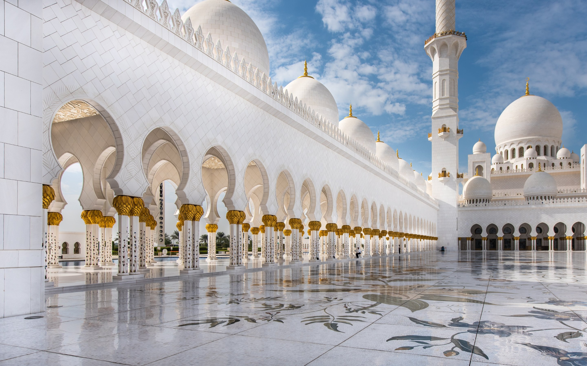

<div class="container">
  <div class="head">
    <ion-searchbar placeholder="Rechercher une mosquée"></ion-searchbar>
  </div>
  <div class="body">
    <div class="favories">
      <h3>Favoris</h3>
      <div class="trait"></div>
      <div class="image-container">
        <div class="image-list relative">
            
            <p class="absolute top-2 left-2">Masdjid Aqsa</p>
        </div>
      </div>
      <div class="trait"></div>
      <ion-label>Toutes les mosquees</ion-label>
      <ion-icon *ngIf="user?.admin === true" name="add-circle" type="button" [routerLink]="['ajouter-mosque']"></ion-icon>
    </div>

    <ion-card color="light" *ngFor="let mosque of mosquees" [routerLink]="['detail-mosque', mosque.info.id]">
      <ion-card-header>
        
        <ion-card-title>
          <p>{{ mosque.info.nom }}</p>
          <p>{{ mosque.info.imam }}</p>
          <p>{{ mosque.info.quartier }}</p>
        </ion-card-title>
      </ion-card-header>
    </ion-card>
  </div>
</div>

